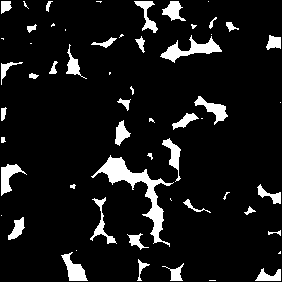

| Early studies of galaxy distributions revealed clustering hierarchies. |
| Chapters 9 and 33-35 of Benoit Mandelbrot's
The Fractal Geometry of Nature
present a geometical cartoon that mimicks the appearance of galaxy clusters
without the underlying physics (a point evidently missed by some astronomers
who wrote early reviews of this book). |
| One cartoon uses Levy flights,
the other random tremas, what remains after removing
randomly placed circles with radii distributed in a particular way. |
| Here is an example of constructing a random trema. |
|  |
| Click the picture to animate. |
|
| Both exhibit the filaments and walls of the
observed distribution of galaxies, but the Levy cartoon is too
lacunar, its gaps are larger than observed. |
| The lacunarity of the random trema cartoon
can be adjusted to fit observations, and the forgeries thus produced have a
convincing appearance. |